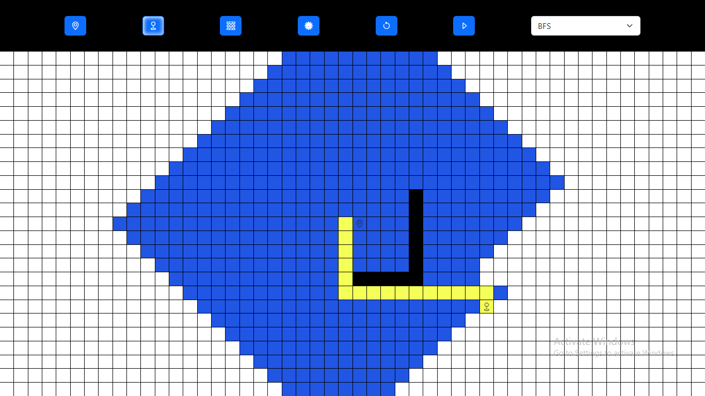

Shortest PathFinder
Visualizer
Pathfinder
Pathfinder is a tool or concept used to find the best path between two points, considering obstacles and constraints. It involves algorithms and techniques for efficient navigation or routing.
Try Pathfinder

Back to top